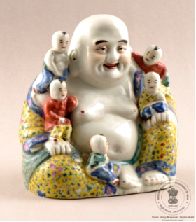

🔇 Is bhasha me is vastu ka audio abhi uplabdh nahi hai.
8. III - 71: हँसते हुए बुद्ध की मूर्ति

8. III - 71
पुरानी चीनी मिट्टी की मूर्ति, जिसमें हंसते हुए बुद्ध को बड़े आकार में बैठा हुआ दिखाया गया है और उनके हाथ, कंधे और गोद में पाँच बच्चे बैठे हैं। इसे विभिन्न रंगों में रंगा गया है। इस शानदार और बहुरंगी हंसते हुए बुद्ध की मूर्ति की शक्ति को महसूस करें, जो समृद्धि, सौभाग्य और एक सुखमय पारिवारिक जीवन का प्रतीक है। मोतियों को धारण करने वाला, यह प्रतीक बच्चों को भी शांत करने और मार्गदर्शन करने की क्षमता रखता है। इसकी उत्पत्ति चीन से हुई थी और यह 19वीं सदी का है। हंसते हुए बुद्ध को बौद्ध और ताओवादी परंपराओं में खुशी और सौभाग्य का प्रतीक माना जाता है। उन्हें अक्सर बड़ी उभरी हुई पेट और मुस्कुराते हुए चेहरे के साथ दर्शाया जाता है।
8. III - 71: Figure of the Laughing Buddha
8. III - 71
An old porcelain figure showing the Laughing Buddha seated at large size, with five children seated on his hands, shoulders and lap. It is painted in various colours. Feel the power of this splendid, many-coloured figure of the Laughing Buddha, a symbol of prosperity, good fortune and a happy family life. Holding beads, this figure is also believed to have the power to calm and guide children. It originated in China and dates to the 19th century. The Laughing Buddha is regarded in Buddhist and Taoist traditions as a symbol of happiness and good fortune. He is often depicted with a large protruding belly and a smiling face.
8. III - 71: నవ్వుతున్న బుద్ధుని ప్రతిమ
8. III - 71
పాత పింగాణీ ప్రతిమ, ఇందులో నవ్వుతున్న బుద్ధుడు పెద్ద పరిమాణంలో కూర్చుని ఉండగా ఆయన చేతులు, భుజాలు మరియు ఒడిలో ఐదుగురు పిల్లలు కూర్చుని ఉన్నారు. దీనిని వివిధ రంగులతో అలంకరించారు. సమృద్ధి, సౌభాగ్యం మరియు సుఖమయ కుటుంబ జీవితానికి ప్రతీక అయిన ఈ అద్భుతమైన, బహురంగుల నవ్వుతున్న బుద్ధుని ప్రతిమ శక్తిని అనుభవించండి. ముత్యాలు ధరించిన ఈ ప్రతీకకు పిల్లలను శాంతపరిచి మార్గనిర్దేశం చేసే సామర్థ్యం కూడా ఉందని భావిస్తారు. దీని మూలం చైనా, ఇది 19వ శతాబ్దానికి చెందినది. నవ్వుతున్న బుద్ధుడిని బౌద్ధ మరియు తావోయిస్ట్ సంప్రదాయాల్లో ఆనందం మరియు సౌభాగ్యానికి ప్రతీకగా భావిస్తారు. ఆయనను తరచుగా పెద్ద ముందుకు వచ్చిన పొట్టతో, నవ్వుతున్న ముఖంతో చిత్రీకరిస్తారు.
8. III-71: ہنستے بدھ کا مجسمہ
8. III-71
یہ چینی مٹی کا ایک قدیم اور نہایت دلکش مجسمہ ہے، جس میں غیر معمولی جسامت کے حامل ہنستے ہوئے بدھا کو بیٹھے ہوئے دکھایا گیا ہے۔ ان کے بازو کندھے اور گود میں پانچ بچے بیٹھے ہیں۔ یہ مجسمہ مختلف شوخ اور دل آویز رنگوں میں مزین ہے۔ یہ خوب صورت اور کثیر رنگی پیکر ہنستے ہوئے بدھا کو پانچ بچوں کے ساتھ پیش کرتا ہے، جو خوشحالی خوش بختی اور پُرامن خاندانی زندگی کی علامت سمجھا جاتا ہے۔ بدھا کے ہاتھ میں مالا ہے جو سکون اور اطمینان کی علامت ہے، روایت کے مطابق یہ پریشان یا شرارتی بچوں کی رہنمائی اور تربیت میں مددگار تصور کی جاتی ہے۔ یہ مجسمہ چین سے تعلق رکھتا ہے اور انیسویں صدی کا ہے۔ ہنستے ہوئے بدھا کو بدھ مت اور تاؤ مت دونوں روایات میں خوشی اور خوش قسمتی کی علامت سمجھا جاتا ہے۔ انہیں عموماً بڑے اور ابھرتے ہوئے پیٹ اور مسکراتے چہرے کے ساتھ دکھایا جاتا ہے جو مسرت اور اطمینان کی نمائندگی کرتا ہے۔
ایلایکسایکس-214: جلوسکامنظر
شادی کا جلوس ایک رسمی تقریب ہے جس میں دولہا اپنے اہلِ خانہ اور دوستوں کے ہمراہ خوشی اور جشن کے انداز میں شادی کی جگہ کی طرف روانہ ہوتا ہے۔اس منظر میں دولہا 34 افراد کے ساتھ لکڑی کے تختے پر دکھایا گیا ہے اور دولہا گھوڑے پر سوار ہے۔شادی کا جلوس شادی کی تقریبات کا ایک اہم حصہ ہوتا ہے، جس میں عموماً موسیقی، رقص، آتشبازی، اور خوشی کا سماں ہوتا ہے۔ یہ دولہا کے دلہن کے پاس جانے کے سفر اور دو خاندانوں کے ملاپ کی علامت ہے۔یہ شادی کا جلوس دولہا کے گھر سے روانہ ہو کر شادی کی تقریب کے مقام تک پہنچتا ہے، جو عموماً دلہن کے گھر ہوتا ہے۔ مختلف ثقافتوں میں شادی کے جلوس سے متعلق اپنی مخصوص روایات اور رسم و رواج پائے جاتے ہیں، جو ان کے عقائد اور سماجی اقدار کی عکاسی کرتے ہیں۔
ایلایکسایکس-214: جلوسکامنظر
شادی کا جلوس ایک رسمی تقریب ہے جس میں دولہا اپنے اہلِ خانہ اور دوستوں کے ہمراہ خوشی اور جشن کے انداز میں شادی کی جگہ کی طرف روانہ ہوتا ہے۔اس منظر میں دولہا 34 افراد کے ساتھ لکڑی کے تختے پر دکھایا گیا ہے اور دولہا گھوڑے پر سوار ہے۔شادی کا جلوس شادی کی تقریبات کا ایک اہم حصہ ہوتا ہے، جس میں عموماً موسیقی، رقص، آتشبازی، اور خوشی کا سماں ہوتا ہے۔ یہ دولہا کے دلہن کے پاس جانے کے سفر اور دو خاندانوں کے ملاپ کی علامت ہے۔یہ شادی کا جلوس دولہا کے گھر سے روانہ ہو کر شادی کی تقریب کے مقام تک پہنچتا ہے، جو عموماً دلہن کے گھر ہوتا ہے۔ مختلف ثقافتوں میں شادی کے جلوس سے متعلق اپنی مخصوص روایات اور رسم و رواج پائے جاتے ہیں، جو ان کے عقائد اور سماجی اقدار کی عکاسی کرتے ہیں۔
8. III - 71: লাফিং বুদ্ধের মূর্তি
8. III - 71
চিনামাটির তৈরি এক বিশাল আকৃতির ‘লাফিং বুদ্ধ’-এর পুরনো মূর্তি। উজ্জ্বল নানা রঙে রাঙানো এই মূর্তিতে দেখা যাচ্ছে, বুদ্ধের হাত, কাঁধ এবং কোল জুড়ে পাঁচটি শিশু খেলা করছে। পাঁচটি শিশুসহ এই উজ্জ্বল ও রঙিন লাফিং বুদ্ধের মূর্তির মাহাত্ম্য অনুভব করুন, যা মূলত সংসারে প্রাচুর্য, সৌভাগ্য এবং একটি সুখী ও শান্তিপূর্ণ পারিবারিক জীবনের প্রতীক। তাঁর হাতের এই জপমালাটি হলো স্থিরতার প্রতীক, যা অতি চঞ্চল বা অবাধ্য শিশুদেরও শান্ত করতে এবং নিয়ন্ত্রণে রাখতে সাহায্য করে।এই মূর্তিটি ১৯ শতকে চীনে তৈরি। বৌদ্ধ ও তাওবাদী উভয় ধর্মেই এই হাসিখুশি বুদ্ধকে আনন্দ আর সুসময়ের প্রতীক বলে মনে করা হয়।তাঁকে সাধারণত বিশাল ভুঁড়ি এবং একগাল হাসিভরা মুখে দেখা যায়।
8. 3-71: લાફિંગ બુદ્ધની પ્રતિમા
8. 3-71
ઉભેલી જાપાની સ્ત્રી “માઇકો”ની પ્રતિમા, જેણે બંને હાથમાં છત્રી પકડી રાખી છે. છાતી પર ગુલાબી રંગની મણિયાની પટ્ટી (બેલ્ટ) જેવી શોભા છે. ફૂલોના આકારવાળું વસ્ત્ર પરિધાન કર્યા છે અને માથેથી લટકતા ફૂલોની સજાવટ છે. “માઇકો”નો અર્થ ક્યોટોમાં શિક્ષાર્થી ગેશા યુવતી થાય છે. તેમને જાપાની નૃત્યો શીખવા ફરજિયાત હોય છે, તેથી તેમને “માઇકો” કહેવામાં આવે છે — કારણ કે “માઇ” એટલે નૃત્ય અને “કો” એટલે છોકરી. ગેશા ગુડિયા એવી આકર્ષક જાપાની સ્ત્રીઓનું પ્રતિનિધિત્વ કરે છે જે નૃત્ય, ગીત, સંવાદ અને અન્ય પ્રતિભા દ્વારા મનોરંજન આપે છે. દરેક જાપાની ગેશા ગુડિયાનું વસ્ત્ર રેશમથી સુંદર રીતે બનાવવામાં આવ્યું છે અને તે ખરેખર જાપાની ગેશાઓ દ્વારા પહેરાતી અસલી કિમોનો જેવી લાગે છે. અમારી (અહીની) તમામ જાપાની ગેશા ગુડિયાઓને ઊંચી ગુણવત્તા આપવા માટે કાળા લાકડાના તખ્તા પર ઉભી રાખવામાં આવી છે. આ ગુડિયાઓ જાપાન સરકારે માર્ચ 1966માં સલાર જંગ સંગ્રહાલયને ભેટ તરીકે આપી હતી.
2.CS-I-303: ગણેશ ઓન મુશિકા
પોર્સેલિનથી બનેલી ભગવાન ગણેશની પ્રતિમા, જેઓ ચાર હાથ ધરાવે છે અને ઉંદર પર આરુઢ છે. તેમના ઉપરના વસ્ત્રનો રંગ લાલ છે. આ પ્રતિમા ભારતમાંથી ઉત્પન્ન થઈ છે અને તેનું સમયકાળ 20મી સદીનો છે. ભગવાન ગણેશને પ્રસિદ્ધ રીતે તેમના વાહન ઉંદર (મૂષક) પર આરુઢ દર્શાવવામાં આવે છે. ઉંદર અશાંત મન, ઇચ્છાઓ અને જટિલ માર્ગોમાંથી પસાર થવાની ક્ષમતા દર્શાવે છે. ભગવાન ગણેશના વાહન તરીકે ઉંદર કેમ છે, તેની પાછળ એક કથા છે. ગણેશજી પાસે નકારાત્મકતાને સકારાત્મકતામાં પરિવર્તિત કરવાની શક્તિ છે, તેથી તેમણે મૂષક પર આરુઢ થવાનું પસંદ કર્યું. ગણેશજી હિંદુ ધર્મમાં હાથીમુખવાળા દેવતા છે. તેઓ ભગવાન શિવ અને દેવી પાર્વતીના પુત્ર છે. ગણેશજી હિંદુ ધર્મમાં અત્યંત લોકપ્રિય અને સૌથી વધુ પૂજાતા દેવતાઓમાંના એક છે. હિંદુ પરંપરા મુજબ ગણેશજી જ્ઞાન, સંપત્તિ, સફળતા અને શુભલાભના દેવતા તરીકે માનવામાં આવે છે.
3. CS-I-305: પદ્મસંભવ
રંગીન પોર્સેલિનથી બનેલી તાજધારી દેવી પદ્મસમ્ભવની પ્રતિમા, જે દસ હાથ ધરાવે છે અને કમળ પર બેઠેલી છે. આ દાવવાદી પ્રતિમા દસ હાથ સાથે આકારિત છે, જેમાં દરેક હાથમાં અલગ-અલગ ચિન્હો છે. તેજસ્વી રંગોના ઢીલા વસ્ત્રો પહેરેલા છે અને સમુદ્રની લહેરો ઉપર ઊભેલા કમળના આકારના પાટિયા પર સ્થિત છે. પદ્મસમ્ભવ તાંત્રિક બૌદ્ધ ધર્મના એક મહત્વપૂર્ણ વ્યક્તિત્વ છે, જે તેમના તાંત્રિક સાધનો અને ક્રિયાઓના કુશળ ઉપયોગ માટે જાણીતા છે. તેઓ તિબેટી બૌદ્ધ ધર્મમાં અતિ શ્રદ્ધાપાત્ર છે અને તિબેટમાં બૌદ્ધ ધર્મના સ્થાપક પુરુષોમાંના એક માનવામાં આવે છે. પદ્મસમ્ભવે તિબેટમાં બૌદ્ધ ધર્મની સ્થાપના અને મજબૂતિકરણમાં અગત્યની ભૂમિકા ભજવી હતી. કહેવામાં આવે છે કે તેઓ કમળના ફૂલમાંથી જન્મેલા હતા, જે બૌદ્ધ કલા અને સાહિત્યમાં સામાન્ય પ્રતીક છે. પદ્મસમ્ભવ તિબેટી સંસ્કૃતિના કેન્દ્રીય વ્યક્તિત્વ છે અને તેમની પ્રતિમાઓ, ચિત્રો અને અન્ય કલારૂપોમાં સમગ્ર તિબેટમાં દર્શાવવામાં આવે છે. આ પ્રતિમા જાપાનમાં ઉત્પન્ન થયેલી છે અને તેનું સમયકાળ 19મી સદીનો છે.
4. CS-I-812: ઠીંગણાની આકૃતિ
અહીં “ડોક” નામનો આકાર છે, જે સાત ઠીંગણાઓમાંનો એક છે, ઝાડના ખૂંટ પર બેઠેલો છે. તેની ડાબો હાથ કમર પર છે, તેણે લીલા રંગની ટોપી, સફેદ શર્ટ અને કાળા જૂતાં પહેર્યા છે. આ આકાર કાળા પટ્ટા અને પીળી બકલ સાથે સજ્જ છે. સાત બોના “સ્નો વ્હાઈટ એન્ડ ધ સેવન ડ્વાર્ફ્સ” નામની ડિઝ્નીની એનિમેટેડ ફિલ્મના પાત્રોનો એક જૂથ છે. તેઓ છે – ડોક, ગ્રમ્પી, બેશફુલ, સ્લીપી, સ્નીઝી, હેપ્પી અને ડોપી – દરેકની પોતાની અલગ વ્યક્તિગતતા છે. તેઓ જંગલની વચ્ચે એક નાનકડા કોટેજમાં રહે છે અને હીરાની ખાણમાં કામ કરે છે. તેઓ તેમની દયાળુ સ્વભાવ અને સ્નો વ્હાઈટને પોતાના ઘરે સ્વાગત કરવા માટે જાણીતા છે. ડોક આ જૂથનો નેતા છે – બુદ્ધિશાળી અને સમજદાર. ગ્રમ્પી સૌથી વધુ ચીડિયાળો બોન છે. બેશફુલ સૌથી શરમાળ અને રોમેન્ટિક છે. સ્લીપી હંમેશાં થાકેલો અને ઊંઘેલો રહે છે. સ્નીઝી એ એકમાત્ર બોન છે જેનું નામ તેના સ્વભાવને નહીં, પણ એક આરોગ્યસ્થિતિને દર્શાવે છે. હેપ્પી સૌથી આનંદી અને ખુશમિજાજ બોન છે. ડોપી સૌથી નાનો અને અણઘડ ઠીંગણો છે, બોલતો નથી અને દાઢી વિનાનો છે. આ આકાર જર્મનીમાં બનાવાયેલો છે અને તેનો સમયકાળ 20મી સદીનો છે.
5. CS-II-656: હોડી
સોનાની પરત ચડાવેલ યુદ્ધનૌકાનું સૂક્ષ્મ મોડેલ, જેમાં ત્રણ મસ્ત, બે સૈનિક, પાંચ તોપો, ચાર રૂડર અને બીજી બાજુ ત્રણ માસ્ક છે. એક છેડે ધ્વજ અને ચિહ્નો સાથે ચાર વર્તુળોમાં ચીની લખાણ છે. આ નૌકાને કોતરેલા લાકડાના આધાર પર મૂકવામાં આવી છે. આ યુદ્ધનૌકાઓ ચીનની પરંપરાગત વહાણોના એક પ્રકાર છે. તેમની વિશેષતા સમતળ તળિયાવાળો આકાર, મધ્યમાં એક રૂડર અને સામાન્ય રીતે સમતળ પાછળનો ભાગ (ટ્રાન્સમ) છે. આ નૌકાઓ સામાન્ય રીતે માલવાહક, મનોરંજન માટેની નૌકાવિહાર કે પછી નદીઓ અને દરિયાકાંઠા પર રહેઠાણ માટેની હાઉસબોટ તરીકે ઉપયોગમાં લેવાય છે. આ નૌકાઓ ખાસ કરીને નદીઓમાં નેવિગેશન, આંતરરાષ્ટ્રીય વેપારના અન્વેષણ અને સમુદ્રી યુદ્ધ માટે રચાયેલ છે. આજ સુધી એશિયાના વિવિધ ભાગોમાં માછીમારી, વેપાર અને પર્યટન માટે આવા જ પ્રકારની નૌકાઓનો ઉપયોગ થાય છે. આ સૂક્ષ્મ યુદ્ધનૌકા ચાંદીથી બનાવવામાં આવી છે. ચીની મોડલ યુદ્ધનૌકા 20મી સદીના સમયકાળની છે.
6. CS-IV-346: મિનિએચર વીણા
છ હારવાળું હાર્પનું સૂક્ષ્મ મોડેલ. શરીરના કિનારા હાથીદાંતથી બનાવેલા છે, આગળના દંડના ટોચ પર હાથીદાંતથી બનેલો પક્ષી છે અને પાછળની બાજુએ કોતરાયેલું પક્ષીના મસ્તકનું આકાર છે. હાર્પનું શરીર ઓકર અને બર્ન્ટ સિયેના રંગની ઢાળવાળી પ્લાસ્ટિક શીટથી આવરાયેલું છે. આ વાદ્યમાં ધ્વનિ ઉત્પન્ન કરનાર ભાગ એટલે તાર, જે નાઇલોન, સ્ટીલ અથવા ક્યારેક આંતરડાના તંતુઓથી બનેલા હોય છે. તારોને સામાન્ય રીતે ધનુષ (બો) ફેરવી વગાડવામાં આવે છે. સંગીતકાર પોતાની આંગળીઓથી તારો ઝણકાવે છે અને ક્યારેક ધનુષને ઊંધું ફેરવી તેની લાકડાની હાથિયાળી સાથે, જે પાછળના ભાગે પક્ષીના મસ્તકના આકારમાં કોતરાયેલ છે, તારો વગાડે છે. તારોને મોટાભાગે ધનુષ ફેરવી વગાડવામાં આવે છે. આ નાનું હાર્પનું મોડેલ હાથીદાંત અને લાકડાથી બનાવવામાં આવ્યું છે. આ સૂક્ષ્મ હાર્પ યુરોપનું છે અને 20મી સદીના સમયકાળનું છે.
7. સીએસ-IV-531: અદાલતનું દૃશ્ય
લાકડામાં કોતરાયેલ અદાલતનું દૃશ્ય. એક અધિકારી ખુરશી પર બેઠેલો છે, તેના સામે ટેબલ છે. તેની બન્ને બાજુએ બે સહાયક છે અને ચાર રક્ષક ઉભા છે. અધિકારીના સામે બે આરોપી ઊભા છે — એકના ગળામાં લાકડાનો ખૂંટો છે અને બીજા વ્યક્તિના બંને હાથમાં લાકડાનો ખૂંટો બંધાયેલો છે. આ કોતરણી ચીનમાંથી ઉત્પન્ન થયેલી છે અને 20મી સદીના સમયકાળની છે. લાકડાની આ કોતરણી ચીનની ધાર્મિક માન્યતાઓને દર્શાવે છે. ભારતીયોમાં પણ સમાન માન્યતા છે કે જે લોકો પ્રાણીઓ અને માનવો માટે સારા કાર્ય કરે છે તેઓને સ્વર્ગ પ્રાપ્ત થાય છે, જ્યારે દુષ્કર્મ કરનારા લોકોને મૃત્યુ પછી નરકમાં દંડ મળે છે. આ કોતરણીમાં દોષિતોને તેમના વિવિધ પાપો માટે નરકમાં અલગ અલગ શાસ્તિઓ ભોગવતા દર્શાવવામાં આવ્યા છે.
8. 3-71: લાફિંગ બુદ્ધની પ્રતિમા
રંગીન પોર્સેલિનથી બનેલી વિન્ટેજ પ્રતિમા — બેઠેલા વિશાળ હસતા બુદ્ધની, જેના હાથ, ખભા અને ગોદમાં પાંચ બાળકો બેઠેલા છે, અને પ્રતિમા વિવિધ રંગોથી રંગાયેલી છે. પાંચ બાળકો સાથેના આ ચમકદાર અને બહુવર્ણીય હસતા બુદ્ધના આકારમાં સમૃદ્ધિ, સદભાગ્ય અને સુખી કુટુંબજીવનનું પ્રતિક અનુભવો. મણકા ધારણ કરનાર આ સત્તાવાન પ્રતિક દ્વારા સૌથી હઠીલા બાળકોને પણ માર્ગદર્શન અને શાંતિ મળે છે. આ પ્રતિમા ચીનમાં ઉત્પન્ન થયેલી છે અને 19મી સદીની છે. હસતા બુદ્ધને બૌદ્ધ અને દાવવાદ (તાઓવાદ) બંને પરંપરાઓમાં સુખ અને સદભાગ્યના પ્રતિક તરીકે માનવામાં આવે છે. તેમને મોટું, ફૂલેલું પેટ અને હસતો ચહેરો ધરાવતા રૂપમાં દર્શાવવામાં આવે છે.
2.CS-I-303: ગણેશ ઓન મુશિકા
પોર્સેલિનથી બનેલી ભગવાન ગણેશની પ્રતિમા, જેઓ ચાર હાથ ધરાવે છે અને ઉંદર પર આરુઢ છે. તેમના ઉપરના વસ્ત્રનો રંગ લાલ છે. આ પ્રતિમા ભારતમાંથી ઉત્પન્ન થઈ છે અને તેનું સમયકાળ 20મી સદીનો છે. ભગવાન ગણેશને પ્રસિદ્ધ રીતે તેમના વાહન ઉંદર (મૂષક) પર આરુઢ દર્શાવવામાં આવે છે. ઉંદર અશાંત મન, ઇચ્છાઓ અને જટિલ માર્ગોમાંથી પસાર થવાની ક્ષમતા દર્શાવે છે. ભગવાન ગણેશના વાહન તરીકે ઉંદર કેમ છે, તેની પાછળ એક કથા છે. ગણેશજી પાસે નકારાત્મકતાને સકારાત્મકતામાં પરિવર્તિત કરવાની શક્તિ છે, તેથી તેમણે મૂષક પર આરુઢ થવાનું પસંદ કર્યું. ગણેશજી હિંદુ ધર્મમાં હાથીમુખવાળા દેવતા છે. તેઓ ભગવાન શિવ અને દેવી પાર્વતીના પુત્ર છે. ગણેશજી હિંદુ ધર્મમાં અત્યંત લોકપ્રિય અને સૌથી વધુ પૂજાતા દેવતાઓમાંના એક છે. હિંદુ પરંપરા મુજબ ગણેશજી જ્ઞાન, સંપત્તિ, સફળતા અને શુભલાભના દેવતા તરીકે માનવામાં આવે છે.
3. CS-I-305: પદ્મસંભવ
રંગીન પોર્સેલિનથી બનેલી તાજધારી દેવી પદ્મસમ્ભવની પ્રતિમા, જે દસ હાથ ધરાવે છે અને કમળ પર બેઠેલી છે. આ દાવવાદી પ્રતિમા દસ હાથ સાથે આકારિત છે, જેમાં દરેક હાથમાં અલગ-અલગ ચિન્હો છે. તેજસ્વી રંગોના ઢીલા વસ્ત્રો પહેરેલા છે અને સમુદ્રની લહેરો ઉપર ઊભેલા કમળના આકારના પાટિયા પર સ્થિત છે. પદ્મસમ્ભવ તાંત્રિક બૌદ્ધ ધર્મના એક મહત્વપૂર્ણ વ્યક્તિત્વ છે, જે તેમના તાંત્રિક સાધનો અને ક્રિયાઓના કુશળ ઉપયોગ માટે જાણીતા છે. તેઓ તિબેટી બૌદ્ધ ધર્મમાં અતિ શ્રદ્ધાપાત્ર છે અને તિબેટમાં બૌદ્ધ ધર્મના સ્થાપક પુરુષોમાંના એક માનવામાં આવે છે. પદ્મસમ્ભવે તિબેટમાં બૌદ્ધ ધર્મની સ્થાપના અને મજબૂતિકરણમાં અગત્યની ભૂમિકા ભજવી હતી. કહેવામાં આવે છે કે તેઓ કમળના ફૂલમાંથી જન્મેલા હતા, જે બૌદ્ધ કલા અને સાહિત્યમાં સામાન્ય પ્રતીક છે. પદ્મસમ્ભવ તિબેટી સંસ્કૃતિના કેન્દ્રીય વ્યક્તિત્વ છે અને તેમની પ્રતિમાઓ, ચિત્રો અને અન્ય કલારૂપોમાં સમગ્ર તિબેટમાં દર્શાવવામાં આવે છે. આ પ્રતિમા જાપાનમાં ઉત્પન્ન થયેલી છે અને તેનું સમયકાળ 19મી સદીનો છે.
4. CS-I-812: ઠીંગણાની આકૃતિ
અહીં “ડોક” નામનો આકાર છે, જે સાત ઠીંગણાઓમાંનો એક છે, ઝાડના ખૂંટ પર બેઠેલો છે. તેની ડાબો હાથ કમર પર છે, તેણે લીલા રંગની ટોપી, સફેદ શર્ટ અને કાળા જૂતાં પહેર્યા છે. આ આકાર કાળા પટ્ટા અને પીળી બકલ સાથે સજ્જ છે. સાત બોના “સ્નો વ્હાઈટ એન્ડ ધ સેવન ડ્વાર્ફ્સ” નામની ડિઝ્નીની એનિમેટેડ ફિલ્મના પાત્રોનો એક જૂથ છે. તેઓ છે – ડોક, ગ્રમ્પી, બેશફુલ, સ્લીપી, સ્નીઝી, હેપ્પી અને ડોપી – દરેકની પોતાની અલગ વ્યક્તિગતતા છે. તેઓ જંગલની વચ્ચે એક નાનકડા કોટેજમાં રહે છે અને હીરાની ખાણમાં કામ કરે છે. તેઓ તેમની દયાળુ સ્વભાવ અને સ્નો વ્હાઈટને પોતાના ઘરે સ્વાગત કરવા માટે જાણીતા છે. ડોક આ જૂથનો નેતા છે – બુદ્ધિશાળી અને સમજદાર. ગ્રમ્પી સૌથી વધુ ચીડિયાળો બોન છે. બેશફુલ સૌથી શરમાળ અને રોમેન્ટિક છે. સ્લીપી હંમેશાં થાકેલો અને ઊંઘેલો રહે છે. સ્નીઝી એ એકમાત્ર બોન છે જેનું નામ તેના સ્વભાવને નહીં, પણ એક આરોગ્યસ્થિતિને દર્શાવે છે. હેપ્પી સૌથી આનંદી અને ખુશમિજાજ બોન છે. ડોપી સૌથી નાનો અને અણઘડ ઠીંગણો છે, બોલતો નથી અને દાઢી વિનાનો છે. આ આકાર જર્મનીમાં બનાવાયેલો છે અને તેનો સમયકાળ 20મી સદીનો છે.
5. CS-II-656: હોડી
સોનાની પરત ચડાવેલ યુદ્ધનૌકાનું સૂક્ષ્મ મોડેલ, જેમાં ત્રણ મસ્ત, બે સૈનિક, પાંચ તોપો, ચાર રૂડર અને બીજી બાજુ ત્રણ માસ્ક છે. એક છેડે ધ્વજ અને ચિહ્નો સાથે ચાર વર્તુળોમાં ચીની લખાણ છે. આ નૌકાને કોતરેલા લાકડાના આધાર પર મૂકવામાં આવી છે. આ યુદ્ધનૌકાઓ ચીનની પરંપરાગત વહાણોના એક પ્રકાર છે. તેમની વિશેષતા સમતળ તળિયાવાળો આકાર, મધ્યમાં એક રૂડર અને સામાન્ય રીતે સમતળ પાછળનો ભાગ (ટ્રાન્સમ) છે. આ નૌકાઓ સામાન્ય રીતે માલવાહક, મનોરંજન માટેની નૌકાવિહાર કે પછી નદીઓ અને દરિયાકાંઠા પર રહેઠાણ માટેની હાઉસબોટ તરીકે ઉપયોગમાં લેવાય છે. આ નૌકાઓ ખાસ કરીને નદીઓમાં નેવિગેશન, આંતરરાષ્ટ્રીય વેપારના અન્વેષણ અને સમુદ્રી યુદ્ધ માટે રચાયેલ છે. આજ સુધી એશિયાના વિવિધ ભાગોમાં માછીમારી, વેપાર અને પર્યટન માટે આવા જ પ્રકારની નૌકાઓનો ઉપયોગ થાય છે. આ સૂક્ષ્મ યુદ્ધનૌકા ચાંદીથી બનાવવામાં આવી છે. ચીની મોડલ યુદ્ધનૌકા 20મી સદીના સમયકાળની છે.
6. CS-IV-346: મિનિએચર વીણા
છ હારવાળું હાર્પનું સૂક્ષ્મ મોડેલ. શરીરના કિનારા હાથીદાંતથી બનાવેલા છે, આગળના દંડના ટોચ પર હાથીદાંતથી બનેલો પક્ષી છે અને પાછળની બાજુએ કોતરાયેલું પક્ષીના મસ્તકનું આકાર છે. હાર્પનું શરીર ઓકર અને બર્ન્ટ સિયેના રંગની ઢાળવાળી પ્લાસ્ટિક શીટથી આવરાયેલું છે. આ વાદ્યમાં ધ્વનિ ઉત્પન્ન કરનાર ભાગ એટલે તાર, જે નાઇલોન, સ્ટીલ અથવા ક્યારેક આંતરડાના તંતુઓથી બનેલા હોય છે. તારોને સામાન્ય રીતે ધનુષ (બો) ફેરવી વગાડવામાં આવે છે. સંગીતકાર પોતાની આંગળીઓથી તારો ઝણકાવે છે અને ક્યારેક ધનુષને ઊંધું ફેરવી તેની લાકડાની હાથિયાળી સાથે, જે પાછળના ભાગે પક્ષીના મસ્તકના આકારમાં કોતરાયેલ છે, તારો વગાડે છે. તારોને મોટાભાગે ધનુષ ફેરવી વગાડવામાં આવે છે. આ નાનું હાર્પનું મોડેલ હાથીદાંત અને લાકડાથી બનાવવામાં આવ્યું છે. આ સૂક્ષ્મ હાર્પ યુરોપનું છે અને 20મી સદીના સમયકાળનું છે.
7. સીએસ-IV-531: અદાલતનું દૃશ્ય
લાકડામાં કોતરાયેલ અદાલતનું દૃશ્ય. એક અધિકારી ખુરશી પર બેઠેલો છે, તેના સામે ટેબલ છે. તેની બન્ને બાજુએ બે સહાયક છે અને ચાર રક્ષક ઉભા છે. અધિકારીના સામે બે આરોપી ઊભા છે — એકના ગળામાં લાકડાનો ખૂંટો છે અને બીજા વ્યક્તિના બંને હાથમાં લાકડાનો ખૂંટો બંધાયેલો છે. આ કોતરણી ચીનમાંથી ઉત્પન્ન થયેલી છે અને 20મી સદીના સમયકાળની છે. લાકડાની આ કોતરણી ચીનની ધાર્મિક માન્યતાઓને દર્શાવે છે. ભારતીયોમાં પણ સમાન માન્યતા છે કે જે લોકો પ્રાણીઓ અને માનવો માટે સારા કાર્ય કરે છે તેઓને સ્વર્ગ પ્રાપ્ત થાય છે, જ્યારે દુષ્કર્મ કરનારા લોકોને મૃત્યુ પછી નરકમાં દંડ મળે છે. આ કોતરણીમાં દોષિતોને તેમના વિવિધ પાપો માટે નરકમાં અલગ અલગ શાસ્તિઓ ભોગવતા દર્શાવવામાં આવ્યા છે.
8. 3-71: લાફિંગ બુદ્ધની પ્રતિમા
રંગીન પોર્સેલિનથી બનેલી વિન્ટેજ પ્રતિમા — બેઠેલા વિશાળ હસતા બુદ્ધની, જેના હાથ, ખભા અને ગોદમાં પાંચ બાળકો બેઠેલા છે, અને પ્રતિમા વિવિધ રંગોથી રંગાયેલી છે. પાંચ બાળકો સાથેના આ ચમકદાર અને બહુવર્ણીય હસતા બુદ્ધના આકારમાં સમૃદ્ધિ, સદભાગ્ય અને સુખી કુટુંબજીવનનું પ્રતિક અનુભવો. મણકા ધારણ કરનાર આ સત્તાવાન પ્રતિક દ્વારા સૌથી હઠીલા બાળકોને પણ માર્ગદર્શન અને શાંતિ મળે છે. આ પ્રતિમા ચીનમાં ઉત્પન્ન થયેલી છે અને 19મી સદીની છે. હસતા બુદ્ધને બૌદ્ધ અને દાવવાદ (તાઓવાદ) બંને પરંપરાઓમાં સુખ અને સદભાગ્યના પ્રતિક તરીકે માનવામાં આવે છે. તેમને મોટું, ફૂલેલું પેટ અને હસતો ચહેરો ધરાવતા રૂપમાં દર્શાવવામાં આવે છે.
8. III-71: ಸ್ಟ್ಯಾಚ್ಯೂ ಆಫ್ ಲಾಫಿಂಗ್ ಬುದ್ಧ
8. III-71
ತೋಳಿನಮೇಲೆ, ಹೆಗಲಮೇಲೆಮತ್ತುಮಡಿಲಿನಲ್ಲಿಐವರುಮಕ್ಕಳುಕುಳಿತಿರುವ, ವಿವಿಧಬಣ್ಣಗಳಿಂದಅಲಂಕರಿಸಲ್ಪಟ್ಟ, ಕುಳಿತಭಂಗಿಯಲ್ಲಿರುವಬೃಹತ್ಲಾಫಿಂಗ್ಬುದ್ಧನಪುರಾತನಪಿಂಗಾಣಿಶಿಲ್ಪಕಲಾಕೃತಿಇದಾಗಿದೆ. ಸಮೃದ್ಧಿ, ಅದೃಷ್ಟ ಮತ್ತು ಸಾಮರಸ್ಯದ ಕೌಟುಂಬಿಕ ಜೀವನದ ಸಂಕೇತವಾಗಿರುವ ಐದು ಮಕ್ಕಳೊಂದಿಗಿನ 'ಲಾಫಿಂಗ್ ಬುದ್ಧ'ನ ಈ ಬೆರಗುಗೊಳಿಸುವ ಹಾಗೂ ಬಹುವರ್ಣದ ಶಿಲ್ಪ ಕಲಾಕೃತಿಯ ದೈವಿಕ ಶಕ್ತಿಯನ್ನು ನೀವು ಇಲ್ಲಿ ಅನುಭವಿಸಬಹುದು. ಇವರು ತಮ್ಮ ಕೈಯಲ್ಲಿ ಹಿಡಿದಿರುವ ಮಣಿಗಳ ಸರವು ಶಾಂತಿಯನ್ನು ತರುವ ಅಧಿಕಾರಯುತ ಸಂಕೇತವಾಗಿದ್ದು, ಎಷ್ಟೇ ಹಠಮಾರಿ ಮಕ್ಕಳಿದ್ದರೂ ಅವರನ್ನು ಸರಿದಾರಿಗೆ ತರಲು ಮತ್ತು ನಿರ್ವಹಿಸಲು ಇದು ಮಾರ್ಗದರ್ಶನ ನೀಡುತ್ತದೆ. ಬೌದ್ಧ ಮತ್ತು ಟಾವೊ ಸಂಪ್ರದಾಯಗಳೆರಡರಲ್ಲೂ 'ಲಾಫಿಂಗ್ ಬುದ್ಧ'ನನ್ನು ಸಂತೋಷ ಮತ್ತು ಅದೃಷ್ಟದ ದ್ಯೋತಕವೆಂದು ಪರಿಗಣಿಸಲಾಗುತ್ತದೆ. ಇವರನ್ನು ಹೆಚ್ಚಾಗಿ ದೊಡ್ಡದಾದ, ಮುಂದಕ್ಕೆ ಚಾಚಿರುವ ಹೊಟ್ಟೆ ಮತ್ತು ಸದಾ ನಗುವ ಮುಖದೊಂದಿಗೆ ಚಿತ್ರಿಸಲಾಗುತ್ತದೆ. ಚೀನಾ ದೇಶದಲ್ಲಿ ರೂಪುಗೊಂಡಿರುವ ಈ ಅದ್ಭುತ ಶಿಲ್ಪ ಕಲಾಕೃತಿಯು 19ನೇ ಶತಮಾನದಷ್ಟು ಹಳೆಯದಾಗಿದೆ.
8. III - 71: ଲାଫିଂ ବୁଦ୍ଧର ମୁର୍ତ୍ତି
8. III - 71
ବିଭିନ୍ନ ରଙ୍ଗରେ ରଙ୍ଗିତ ଏହି ବଡ଼, ବସିଥିବା, ପୁରୁଣା ଚିନାମାଟି ପୋର୍ସେଲିନ୍ ପ୍ରତିମୂର୍ତ୍ତି, ତାଙ୍କ ହାତ, କାନ୍ଧ ଏବଂ କୋଳରେ ପାଞ୍ଚଟି ପିଲାଙ୍କୁ ଧରିଛି। ପାଞ୍ଚଟି ପିଲାଙ୍କ ସହିତ ଲାଫିଙ୍ଗ ବୁଦ୍ଧଙ୍କ ଏହି ସ୍ପନ୍ଦନଶୀଳ, ବହୁରଙ୍ଗୀ ପ୍ରତିମୂର୍ତ୍ତିର ଶକ୍ତି ଅନୁଭବ କରନ୍ତୁ, ଯାହା ସମୃଦ୍ଧି, ସୌଭାଗ୍ୟ ଏବଂ ଏକ ସୁସଙ୍ଗତ ପାରିବାରିକ ଜୀବନର ପ୍ରତୀକ। ଶାନ୍ତି ଆଣିବା ପାଇଁ ଜଣାଶୁଣା ଏହି ପ୍ରାଧାନ୍ୟବାଦୀ ମଣି-ବହନ ପ୍ରତୀକ ସହିତ ସବୁଠାରୁ ବିଦ୍ରୋହୀ ପିଲାମାନଙ୍କୁ ମଧ୍ୟ ମାର୍ଗଦର୍ଶନ ଏବଂ ପରିଚାଳନା କରନ୍ତୁ। ଚୀନ୍ରେ ଉତ୍ପତ୍ତି ଏବଂ 19 ଶତାବ୍ଦୀରୁ ଆରମ୍ଭ ହୋଇଥିବା, ଏହାକୁ ଶାନ୍ତିର ପ୍ରତୀକ ବୋଲି ବିଶ୍ୱାସ କରାଯାଏ। ବୌଦ୍ଧ ଏବଂ ତାଓବାଦୀ ପରମ୍ପରାରେ ଲାଫିଙ୍ଗ ବୁଦ୍ଧଙ୍କୁ ଖୁସି ଏବଂ ସୌଭାଗ୍ୟର ପ୍ରତୀକ ଭାବରେ ବିବେଚନା କରାଯାଏ। ତାଙ୍କୁ ପ୍ରାୟତଃ ଏକ ବଡ଼, ବାହାରିଥିବା ପେଟ ଏବଂ ଏକ ହସୁଥିବା ମୁହଁ ସହିତ ଚିତ୍ରଣ କରାଯାଏ।
8. III - 71: हसणाऱ्या बुद्धाची मूर्ती
8. III - 71
जुनी चिनीमातीची मूर्ती, ज्यात हसणाऱ्या बुद्धाला मोठ्या आकारात बसलेले दाखवले असून त्यांच्या हातांवर, खांद्यांवर व मांडीवर पाच मुले बसली आहेत. ती विविध रंगांनी रंगवलेली आहे. समृद्धी, सौभाग्य आणि सुखी कौटुंबिक जीवनाचे प्रतीक असलेल्या या भव्य व बहुरंगी हसणाऱ्या बुद्धाच्या मूर्तीची शक्ती अनुभवा. मणी धारण करणारे हे प्रतीक मुलांना शांत करण्याची व मार्गदर्शन करण्याची क्षमताही राखते. तिचे उगमस्थान चीन असून ती १९व्या शतकातील आहे. हसणाऱ्या बुद्धाला बौद्ध व ताओवादी परंपरांमध्ये आनंद व सौभाग्याचे प्रतीक मानले जाते. त्यांना अनेकदा मोठ्या पुढे आलेल्या पोटासह व हसऱ्या चेहऱ्यासह दाखवले जाते.
8. III-71: ചിരിക്കുന്നബുദ്ധന്റെപ്രതിമ
8. III-71
പലനിറങ്ങളിൽ ചായംപൂശിയവലിയചിരിക്കുന്നബുദ്ധന്റെഒരുപോർസലൈൻ രൂപം. അദ്ദേഹത്തിന്റെകൈകളിലുംതോളിലുംമടിയിലുമായിഅഞ്ച്കുട്ടികൾ ഇരിക്കുന്നരീതിയിലാണ്ഇത്നിർമ്മിച്ചിരിക്കുന്നത്. സമൃദ്ധി, ഭാഗ്യം, സമാധാനപരമായകുടുംബജീവിതംഎന്നിവയുടെപ്രതീകമാണ്അഞ്ച്കുട്ടികളോടൊപ്പമുള്ള ഈ ബുദ്ധരൂപം. കയ്യിൽ മുത്തുകൾ ഏന്തിയഈ രൂപംശാന്തതയുടെയുംഅധികാരത്തിന്റെയുംഅടയാളമാണ്; ഇത്വികൃതികളായകുട്ടികളെപ്പോലുംനിയന്ത്രിക്കാൻ സഹായിക്കുമെന്ന്വിശ്വസിക്കപ്പെടുന്നു. പത്തൊൻപതാംനൂറ്റാണ്ടിൽ ചൈനയിൽ നിർമ്മിക്കപ്പെട്ടതാണ് ഈ ശില്പം.ബുദ്ധ, താവോയിസ്റ്റ്പാരമ്പര്യങ്ങളിൽ സന്തോഷത്തിന്റെയുംഭാഗ്യത്തിന്റെയുംപ്രതീകമായാണ്ചിരിക്കുന്നബുദ്ധനെകണക്കാക്കുന്നത്. വലിയവയറുംപുഞ്ചിരിക്കുന്നമുഖവുമാണ്ഇദ്ദേഹത്തിന്റെപ്രധാനസവിശേഷത.